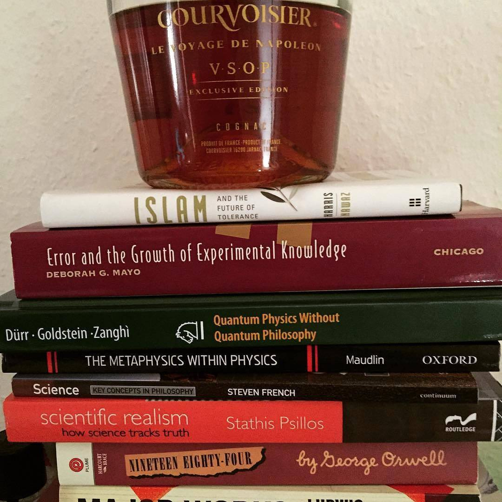

Ryan’s philosophy reading list
")
Figuring it out?
When I take the time, I enjoy reading and discussing philosophy. I’m happy to collaborate with others, to learn with and be encouraged by them. Bellow is a list of works I’d like to either read for the first time (most of them) or understand better. Suggestions or initiatives to start a reading group for any of the following are very welcome.
email: 
Or, maybe try interacting with me on one of the following:
- @RyanDavidReece – twitter
- philpeople.org/profiles/ryan-reece – PhilPeople
- +RyanReece – google+
- academia.edu/RReece – academia.edu
Or, leave me a comment below.
Projects I’d like to tackle
1. Gauge theory and the Aharonov-Bohm effect
2. Machine learning and realism
3. Understand the Carnap-Quine debate
- Carnap, R. (1947). Meaning and Necessity.
- Quine, W.V.O. (1948). On What There Is.
- ❯ Carnap, R. (1950). Empiricism, Semantics, and Ontology.
- Quine, W.V.O. (1951). Two Dogmas of Empiricism.
- Carnap, R. (1955). Meaning and Synonymy in Natural Languages.
- Quine, W.V.O. (1960). Word and Object.
- Quine, W.V.O. & Carnap, R. (1990). Dear Carnap, Dear Van: The Quine-Carnap Correspondence and Related Work.
4. Understand the transition between early and later Wittgenstein
- ❯ Wittgenstein, L. (1921). Tractatus Logico-Philosophicus.
- Wittgenstein, L. (1953). Philosophical Investigations.
5. Trace the history of naturalism
- ❯ Hume, D. (1748). An Enquiry Concerning Human Understanding.
- Quine, W.V.O. (1969). Natural Kinds.
- Hacking, I. (2006). Natural Kinds.
- ❯ French, S. (2007). Science: Key Concepts in Philosophy.
- ▶ Maddy, P. (2007). Second Philosophy.
- Rovelli, C. (2016). Anaximander.
Key:
- ▶ – currently reading
- ❯ – have read first pass
- ✔ – have analyzed
